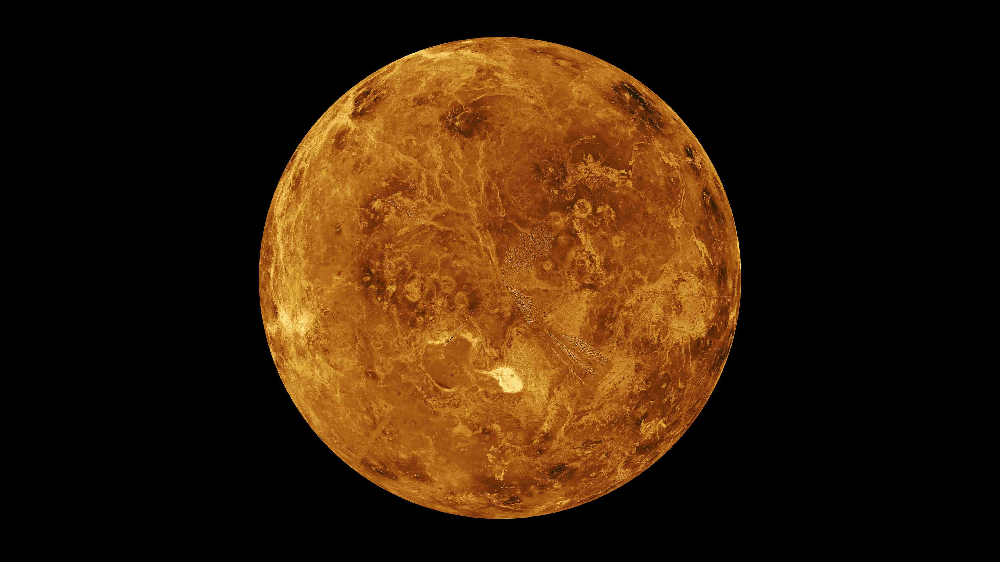

Mercury does not have any moons or rings. Your weight on Mercury would be 38% of your weight on Earth. A day on the surface of Mercury lasts 176 Earth days. A year on Mercury takes 88 Earth days. Mercury has a diameter of 4,879 km, making it the smallest planet. It's not known who discovered Mercury.
